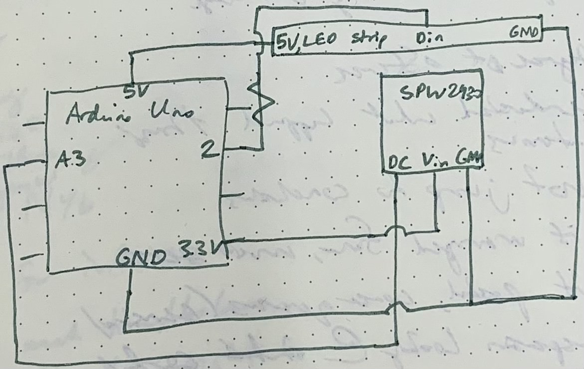
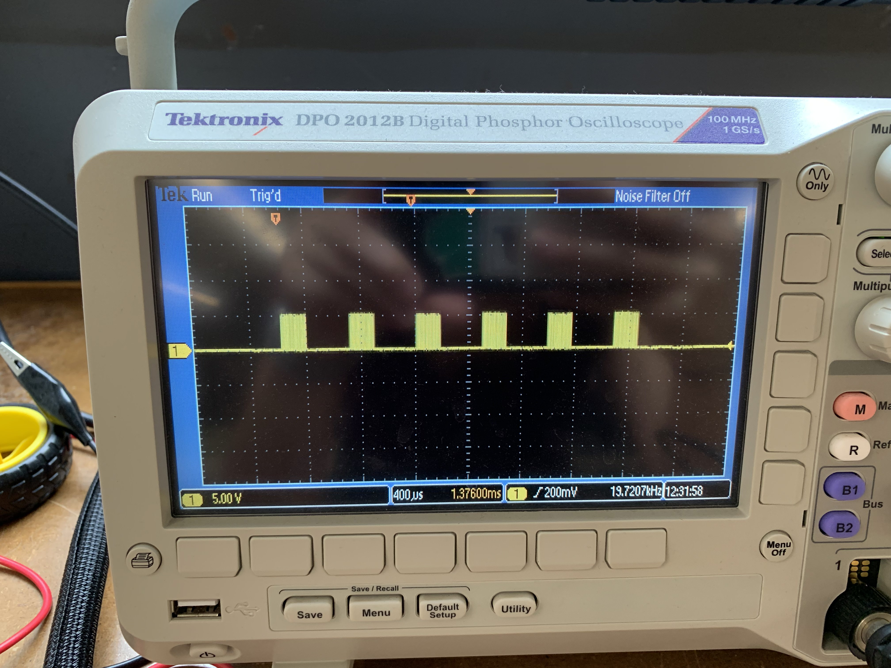

<br>
### Week 7: Electronic output devices
This week's project was to write a program integrating an electronic input and output device. I decided to work on a part of my final project: LED strips that respond to the ambient volume. I wanted the strip to light up in different colors and at a different brightness depending on how loud the surrounding volume is. Eventually, this will come into play in my final music box.
I decided to build off a project I did in week 5, which used the Adafruit MEMS Microphone Breakout SPW2430 to capture volume. I built a circuit integrating the microphone with an LED strip as follows. Essentially, I hooked everything up to the appropriate voltage (5V for the LED strip and 3.3V for the microphone), ground, and input or output pin (analog input pin 3 for the microphone and output pin 2 for the LED strip). I also added a resistor between pin 2 and the LED strip, as recommended by the Adafruit NeoPixel library.

Next came tackling the code. I used code I'd used in week 5 to get the microphone sensing volume. Then, I looked into the NeoPixel library to figure out how to declare the NeoPixel object and the functions needed to set the color and brightness. [This](https://adafruit.github.io/Adafruit_NeoPixel/html/class_adafruit___neo_pixel.html) reference was very helpful.
Finally, I needed to decide how the brightness and color would change based on the volume. The volume number the microphone spits out is in the range of around 100-200, while the ranges of input values for brightness and color are 0-255, so I added 20 to the microphone value to get closer to the upper range of brightness/color values. Then, I added an if statement to set this new, adjusted volume value to 255 in case it happened to be greater than 255. After that, I set the strip brightness to equal the adjusted volume, and played around with manipulating the adjusted volume value to set the RGB color values. More details is in the code below:
<pre><code class="language-arduino">
<pre>
<pre>
<font color="#5e6d03">#include</font> <font color="#434f54">&lt;</font><b><font color="#d35400">Adafruit_NeoPixel</font></b><font color="#434f54">.</font><font color="#000000">h</font><font color="#434f54">&gt;</font> <font color="#434f54">&#47;&#47; Include NeoPixel Library</font>
<font color="#5e6d03">#ifdef</font> <font color="#000000">__AVR__</font>
<font color="#5e6d03">#include</font> <font color="#434f54">&lt;</font><font color="#000000">avr</font><font color="#434f54">&#47;</font><font color="#000000">power</font><font color="#434f54">.</font><font color="#000000">h</font><font color="#434f54">&gt;</font> <font color="#434f54">&#47;&#47; Required for 16 MHz Adafruit Trinket</font>
<font color="#5e6d03">#endif</font>
<font color="#5e6d03">#define</font> <font color="#000000">LED_PIN</font> &nbsp;&nbsp;&nbsp;<font color="#000000">2</font> <font color="#434f54">&#47;&#47; The pin the LED strip is connected to</font>
<font color="#5e6d03">#define</font> <font color="#000000">LED_COUNT</font> <font color="#000000">6</font> <font color="#434f54">&#47;&#47; The number of LEDs on the strip</font>
<b><font color="#d35400">Adafruit_NeoPixel</font></b> <font color="#000000">LedStrip</font><font color="#000000">(</font><font color="#000000">LED_COUNT</font><font color="#434f54">,</font> <font color="#000000">LED_PIN</font><font color="#434f54">,</font> <font color="#d35400">NEO_GRB</font> <font color="#434f54">+</font> <font color="#d35400">NEO_KHZ800</font><font color="#000000">)</font><font color="#000000">;</font> <font color="#434f54">&#47;&#47; Declare NeoPixel strip object</font>
<font color="#434f54">&#47;&#47; Argument 1 = Number of pixels in NeoPixel strip</font>
<font color="#434f54">&#47;&#47; Argument 2 = Arduino pin number (most are valid)</font>
<font color="#434f54">&#47;&#47; Argument 3 = Pixel type flags, add together as needed:</font>
<font color="#434f54">&#47;&#47; &nbsp;&nbsp;NEO_KHZ800 &nbsp;800 KHz bitstream (most NeoPixel products w&#47;WS2812 LEDs)</font>
<font color="#434f54">&#47;&#47; &nbsp;&nbsp;NEO_KHZ400 &nbsp;400 KHz (classic &#39;v1&#39; (not v2) FLORA pixels, WS2811 drivers)</font>
<font color="#434f54">&#47;&#47; &nbsp;&nbsp;NEO_GRB &nbsp;&nbsp;&nbsp;&nbsp;Pixels are wired for GRB bitstream (most NeoPixel products)</font>
<font color="#434f54">&#47;&#47; &nbsp;&nbsp;NEO_RGB &nbsp;&nbsp;&nbsp;&nbsp;Pixels are wired for RGB bitstream (v1 FLORA pixels, not v2)</font>
<font color="#434f54">&#47;&#47; &nbsp;&nbsp;NEO_RGBW &nbsp;&nbsp;&nbsp;Pixels are wired for RGBW bitstream (NeoPixel RGBW products)</font>
<font color="#00979c">const</font> <font color="#00979c">int</font> <font color="#000000">sampleWindow</font> <font color="#434f54">=</font> <font color="#000000">50</font><font color="#000000">;</font> <font color="#434f54">&#47;&#47; Sample window width in mS (50 mS = 20Hz)</font>
<font color="#00979c">unsigned</font> <font color="#00979c">int</font> <font color="#000000">sample</font><font color="#000000">;</font>
<font color="#00979c">void</font> <font color="#000000">setStripColor</font><font color="#000000">(</font><font color="#00979c">int</font> <font color="#000000">red</font><font color="#434f54">,</font> <font color="#00979c">int</font> <font color="#000000">green</font><font color="#434f54">,</font> <font color="#00979c">int</font> <font color="#000000">blue</font><font color="#000000">)</font> <font color="#434f54">&#47;&#47; Function to set the LED strip color based on input color values</font>
<font color="#000000">{</font>
&nbsp;<font color="#5e6d03">for</font> <font color="#000000">(</font><font color="#00979c">int</font> <font color="#000000">i</font> <font color="#434f54">=</font> <font color="#000000">0</font><font color="#000000">;</font> <font color="#000000">i</font> <font color="#434f54">&lt;</font> <font color="#000000">LED_COUNT</font><font color="#000000">;</font> <font color="#000000">i</font><font color="#434f54">++</font><font color="#000000">)</font> <font color="#000000">{</font>
&nbsp;&nbsp;&nbsp;<font color="#000000">LedStrip</font><font color="#434f54">.</font><font color="#d35400">setPixelColor</font><font color="#000000">(</font><font color="#000000">i</font><font color="#434f54">,</font> <font color="#000000">LedStrip</font><font color="#434f54">.</font><font color="#d35400">Color</font><font color="#000000">(</font><font color="#000000">red</font><font color="#434f54">,</font> <font color="#000000">green</font><font color="#434f54">,</font> <font color="#000000">blue</font><font color="#000000">)</font><font color="#000000">)</font><font color="#000000">;</font>
&nbsp;&nbsp;&nbsp;<font color="#000000">LedStrip</font><font color="#434f54">.</font><font color="#d35400">show</font><font color="#000000">(</font><font color="#000000">)</font><font color="#000000">;</font>
&nbsp;<font color="#000000">}</font>
<font color="#000000">}</font>
<font color="#00979c">void</font> <font color="#5e6d03">setup</font><font color="#000000">(</font><font color="#000000">)</font>
<font color="#000000">{</font>
&nbsp;<font color="#000000">LedStrip</font><font color="#434f54">.</font><font color="#d35400">begin</font><font color="#000000">(</font><font color="#000000">)</font><font color="#000000">;</font> &nbsp;&nbsp;&nbsp;&nbsp;&nbsp;&nbsp;&nbsp;&nbsp;&nbsp;&nbsp;<font color="#434f54">&#47;&#47; Initialize NeoPixel strip object</font>
&nbsp;<font color="#000000">LedStrip</font><font color="#434f54">.</font><font color="#d35400">show</font><font color="#000000">(</font><font color="#000000">)</font><font color="#000000">;</font> &nbsp;&nbsp;&nbsp;&nbsp;&nbsp;&nbsp;&nbsp;&nbsp;&nbsp;&nbsp;&nbsp;<font color="#434f54">&#47;&#47; Turn off all pixels</font>
&nbsp;<font color="#000000">LedStrip</font><font color="#434f54">.</font><font color="#d35400">setBrightness</font><font color="#000000">(</font><font color="#000000">0</font><font color="#000000">)</font><font color="#000000">;</font> <font color="#434f54">&#47;&#47; Set initial brightness to 0</font>
<font color="#000000">}</font>
<font color="#00979c">void</font> <font color="#5e6d03">loop</font><font color="#000000">(</font><font color="#000000">)</font>
<font color="#000000">{</font>
&nbsp;<font color="#00979c">unsigned</font> <font color="#00979c">long</font> <font color="#000000">startMillis</font> <font color="#434f54">=</font> <font color="#d35400">millis</font><font color="#000000">(</font><font color="#000000">)</font><font color="#000000">;</font> <font color="#434f54">&#47;&#47; Start of sample window</font>
&nbsp;<font color="#00979c">int</font> <font color="#000000">adjustedVolume</font> <font color="#434f54">=</font> <font color="#000000">0</font><font color="#000000">;</font>
&nbsp;<font color="#00979c">unsigned</font> <font color="#00979c">int</font> <font color="#000000">signalMax</font> <font color="#434f54">=</font> <font color="#000000">0</font><font color="#000000">;</font>
&nbsp;<font color="#00979c">unsigned</font> <font color="#00979c">int</font> <font color="#000000">signalMin</font> <font color="#434f54">=</font> <font color="#000000">1024</font><font color="#000000">;</font>
&nbsp;<font color="#00979c">float</font> <font color="#000000">StripColor</font> <font color="#434f54">=</font> <font color="#000000">0</font><font color="#000000">;</font>
&nbsp;<font color="#434f54">&#47;&#47; collect data for 50 mS</font>
&nbsp;<font color="#5e6d03">while</font> <font color="#000000">(</font><font color="#d35400">millis</font><font color="#000000">(</font><font color="#000000">)</font> <font color="#434f54">-</font> <font color="#000000">startMillis</font> <font color="#434f54">&lt;</font> <font color="#000000">sampleWindow</font><font color="#000000">)</font>
&nbsp;<font color="#000000">{</font>
&nbsp;&nbsp;&nbsp;<font color="#000000">sample</font> <font color="#434f54">=</font> <font color="#d35400">analogRead</font><font color="#000000">(</font><font color="#000000">3</font><font color="#000000">)</font><font color="#000000">;</font> &nbsp;&nbsp;<font color="#434f54">&#47;&#47;reading DC pin from pin 3</font>
&nbsp;&nbsp;&nbsp;<font color="#5e6d03">if</font> <font color="#000000">(</font><font color="#000000">sample</font> <font color="#434f54">&lt;</font> <font color="#000000">1024</font><font color="#000000">)</font> &nbsp;<font color="#434f54">&#47;&#47; toss out spurious readings</font>
&nbsp;&nbsp;&nbsp;<font color="#000000">{</font>
&nbsp;&nbsp;&nbsp;&nbsp;&nbsp;<font color="#5e6d03">if</font> <font color="#000000">(</font><font color="#000000">sample</font> <font color="#434f54">&gt;</font> <font color="#000000">signalMax</font><font color="#000000">)</font>
&nbsp;&nbsp;&nbsp;&nbsp;&nbsp;<font color="#000000">{</font>
&nbsp;&nbsp;&nbsp;&nbsp;&nbsp;&nbsp;&nbsp;<font color="#000000">signalMax</font> <font color="#434f54">=</font> <font color="#000000">sample</font><font color="#000000">;</font> &nbsp;<font color="#434f54">&#47;&#47; save just the max levels</font>
&nbsp;&nbsp;&nbsp;&nbsp;&nbsp;<font color="#000000">}</font>
&nbsp;&nbsp;&nbsp;&nbsp;&nbsp;<font color="#5e6d03">else</font> <font color="#5e6d03">if</font> <font color="#000000">(</font><font color="#000000">sample</font> <font color="#434f54">&lt;</font> <font color="#000000">signalMin</font><font color="#000000">)</font>
&nbsp;&nbsp;&nbsp;&nbsp;&nbsp;<font color="#000000">{</font>
&nbsp;&nbsp;&nbsp;&nbsp;&nbsp;&nbsp;&nbsp;<font color="#000000">signalMin</font> <font color="#434f54">=</font> <font color="#000000">sample</font><font color="#000000">;</font> &nbsp;<font color="#434f54">&#47;&#47; save just the min levels</font>
&nbsp;&nbsp;&nbsp;&nbsp;&nbsp;<font color="#000000">}</font>
&nbsp;&nbsp;&nbsp;<font color="#000000">}</font>
&nbsp;<font color="#000000">}</font>
&nbsp;<font color="#000000">adjustedVolume</font> <font color="#434f54">=</font> <font color="#000000">(</font><font color="#000000">signalMax</font> <font color="#434f54">-</font> <font color="#000000">signalMin</font><font color="#000000">)</font> <font color="#434f54">+</font> <font color="#000000">20</font><font color="#000000">;</font> &nbsp;<font color="#434f54">&#47;&#47; peak-peak amplitude, adjusted for LED strip purposes</font>
&nbsp;<b><font color="#d35400">Serial</font></b><font color="#434f54">.</font><font color="#d35400">println</font><font color="#000000">(</font><font color="#000000">adjustedVolume</font><font color="#000000">)</font><font color="#000000">;</font>
&nbsp;<font color="#5e6d03">if</font> <font color="#000000">(</font><font color="#000000">adjustedVolume</font> <font color="#434f54">&gt;</font> <font color="#000000">255</font><font color="#000000">)</font> <font color="#434f54">&#47;&#47; If the value is above 255, which is the highest brightness and color value, set it to 255.</font>
&nbsp;<font color="#000000">{</font>
&nbsp;&nbsp;&nbsp;<font color="#000000">adjustedVolume</font> <font color="#434f54">=</font> <font color="#000000">255</font><font color="#000000">;</font>
&nbsp;<font color="#000000">}</font>
&nbsp;<font color="#000000">LedStrip</font><font color="#434f54">.</font><font color="#d35400">setBrightness</font><font color="#000000">(</font><font color="#000000">adjustedVolume</font><font color="#000000">)</font><font color="#000000">;</font> <font color="#434f54">&#47;&#47; Set the brightness to the adjusted volume</font>
&nbsp;<font color="#000000">setStripColor</font><font color="#000000">(</font><font color="#d35400">abs</font><font color="#000000">(</font><font color="#000000">70</font> <font color="#434f54">-</font> <font color="#000000">adjustedVolume</font><font color="#000000">)</font><font color="#434f54">,</font> <font color="#000000">adjustedVolume</font> <font color="#434f54">&#47;</font> <font color="#000000">2</font><font color="#434f54">,</font> <font color="#000000">adjustedVolume</font> <font color="#434f54">*</font> <font color="#000000">2</font><font color="#000000">)</font><font color="#000000">;</font> <font color="#434f54">&#47;&#47; Set the strip color based on volume</font>
<font color="#000000">}</font>
</pre>
</pre>
</pre>
</code></pre>
Here's the working strip! Note that the last LED in the strip isn't working: I chatted with Nathan and it seems to be a hardware issue rather than a programming problem. For my final project, I'll try again with a different LED strip.
<video width="420" height="750" controls>
<source src="LEDStrip.MOV">
Your browser does not support the video tag.
</video>
To add onto this project in the future, I'll play around with the code that sets the brightness and color to make different color effects. I'll also see if I can get the colors to fade into each other less abruptly.
The next part of the assignment was to use the oscilloscope to determine the time domain at which my LED strip was operating on. I hooked up the scope to ground and to the strip and adjusted the scale and position until I could see the resulting waveform. It's a repeating pattern with a frequency of 19.7 kHz.

Finally, the last part of the assignment was to work on CNC files for the upcoming week. I decided I wanted to make a topographical map of Boston, which I could paint and frame as art. I didn't get too far in the file preparation because I spent a while researching how I could actually pull and prepare this topographical map data, which often requires a lot of cleaning. I wound up finding [this](https://www.instructables.com/CNC-Topographical-Wooden-State/) tutorial, which I'll follow to prepare the files. I plan to pull the map data from [this](https://bostonopendata-boston.opendata.arcgis.com/datasets/50d4342a5d5941339d4a44839d0fd220/explore?location=42.358142%2C-71.057867%2C16.58) Boston Open Data resource.